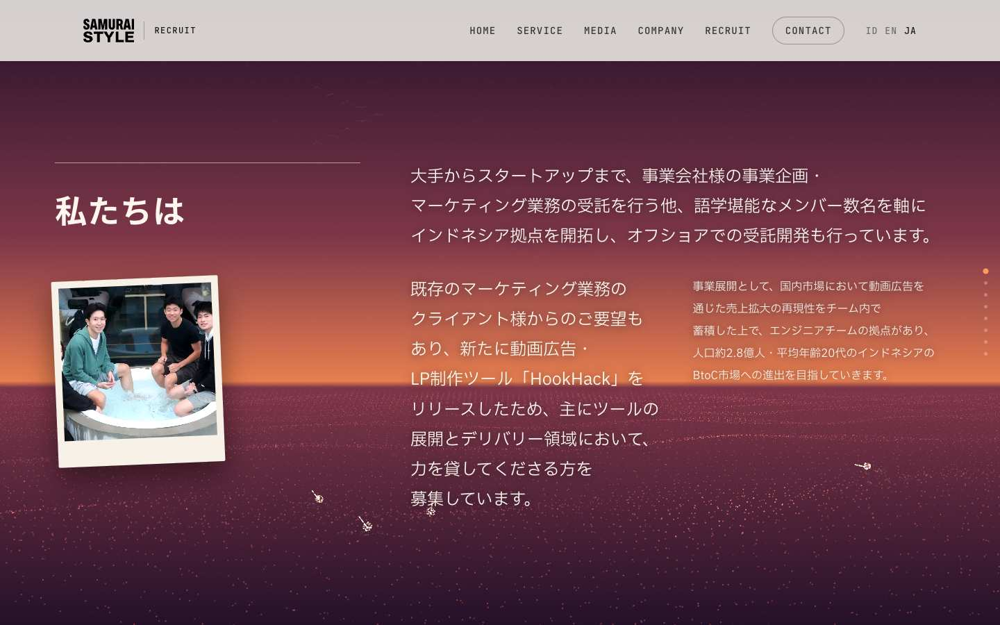
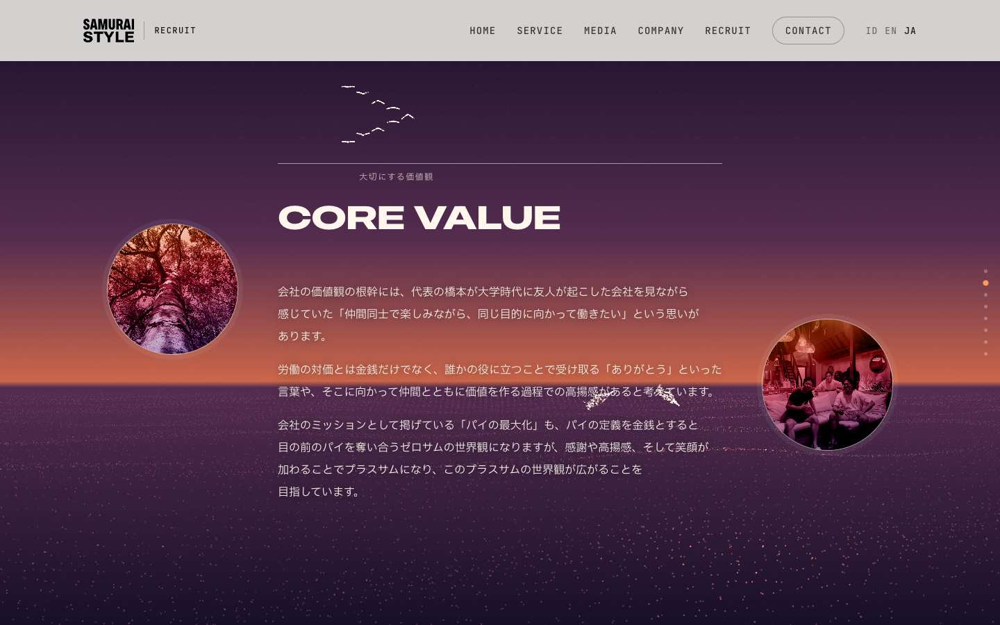
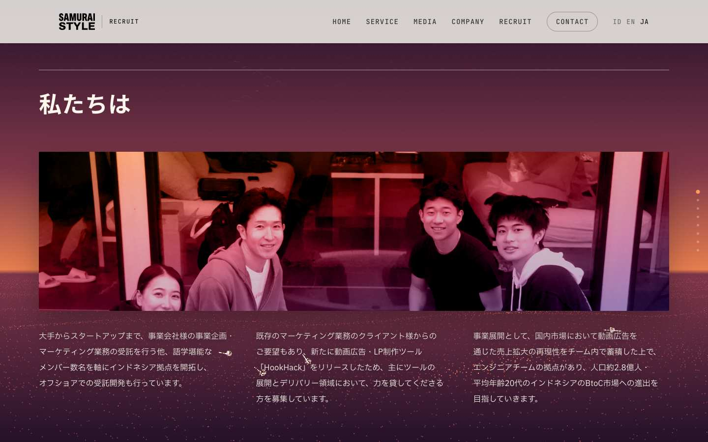
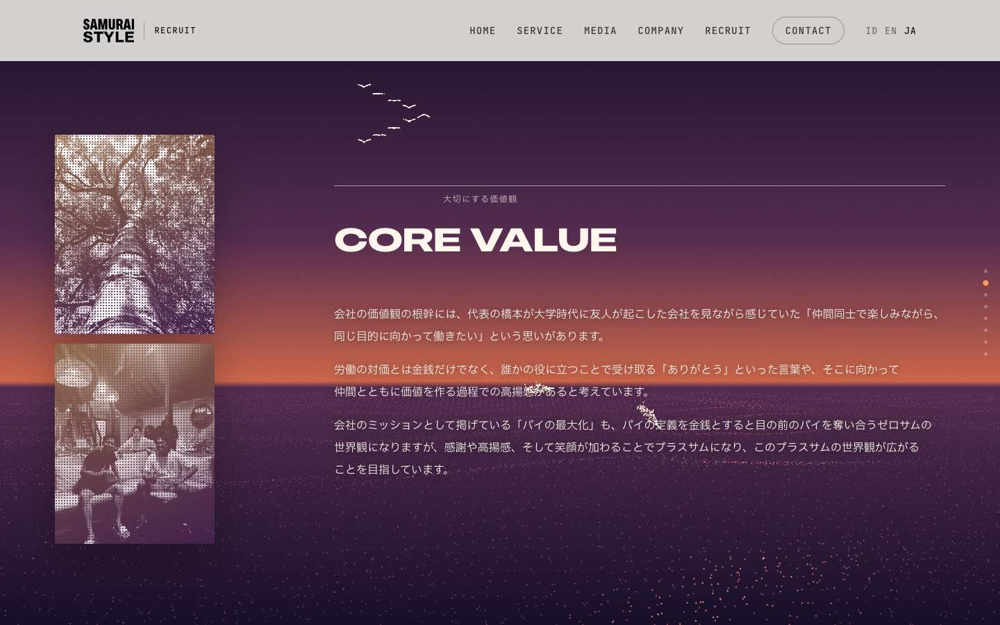
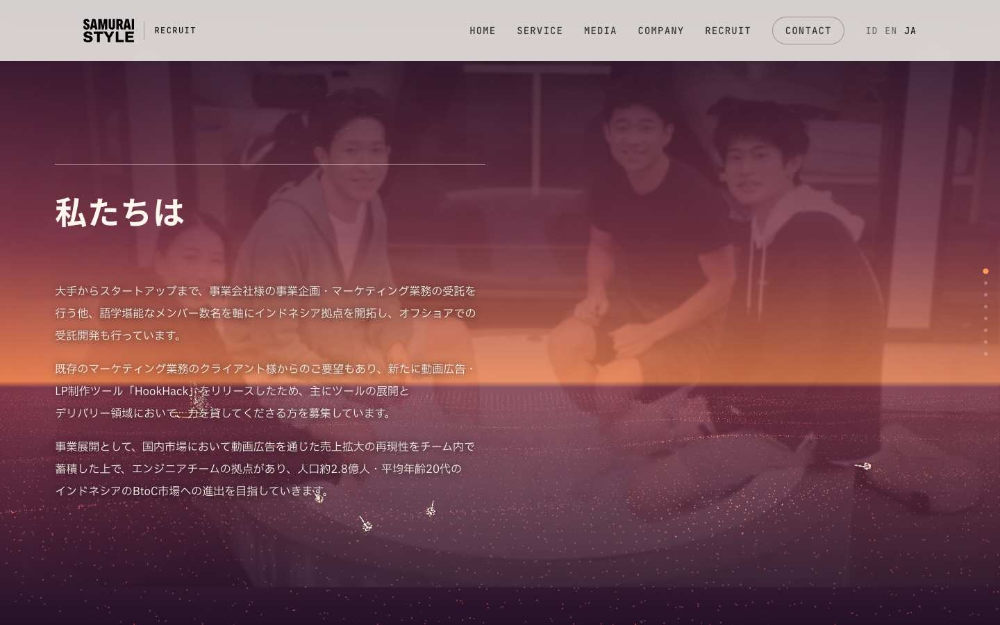
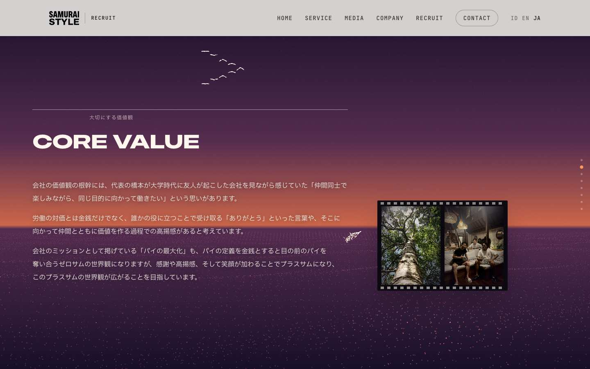

③ 写真の見せ方（同じ写真で比較）

| これまで（v3） | そろえた後（u） | |
| 見出しの上の段 | なし（見出しと英字の小見出しだけ） | 1px の線＋ラベル行（JetBrains Mono 11.5px・1fr 4fr 1fr）。英字の小見出しは日本語ラベルの位置へ |
| 見出しの書体 | Space Grotesk 500（和文は IBM Plex 500）で固定 | Roboto Flex（和文は Noto Sans JP の可変） |
| 見出しの動き | なし | スクロールで「細く縮んだ字 → 太く広く」：wdth 25→151・wght 100→900（和文は wght 100→700・字間 -.08→.02em）。他ページと同じ式 |
| 見出しの大きさ | 72px（和文 44.6px）／スマホ 36px 前後 | 47px／スマホ 18px（会社概要・S2A の節の見出しと同じ） |
| 見出しの下の余白 | 26px | clamp(48px,8vh,88px)＝72px（1440×900） |
| 本文 | IBM Plex Sans JP 15px／30px | IBM Plex Sans JP 16px／32px（S2A・サービスと同じ） |
私たちは＝左に見出しと小さなポラロイド、右に最初の一文を大きく＋残りを2段組
CORE VALUE＝本文を中央の柱に。木とソファの写真は左右の小さな丸窓（夕焼け色）


案2 横長の帯／写真の柱私たちは＝見出しの下に横長の帯（夕焼け色のデュオトーン）＋本文3段組
CORE VALUE＝左に小さな写真の柱（網点）、右に見出しと本文


案3 写真は質感／小さなコマ私たちは＝写真を節の背景に薄く敷く（粒子＋減光＋ぼかし）。文字が主役
CORE VALUE＝写真は右下のフィルムのコマ2枚だけ（粒子）

